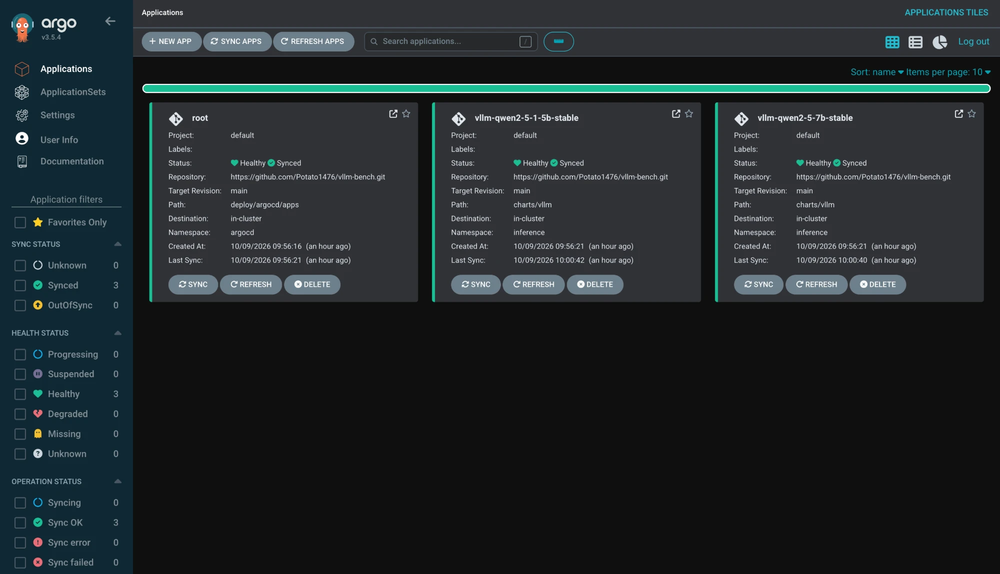
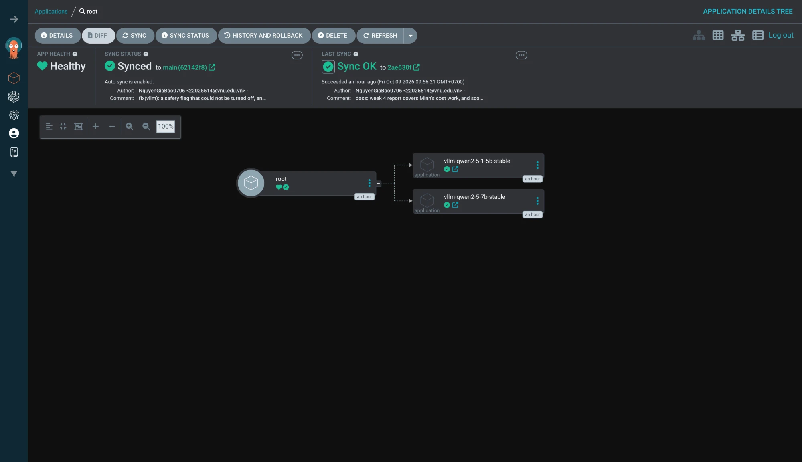
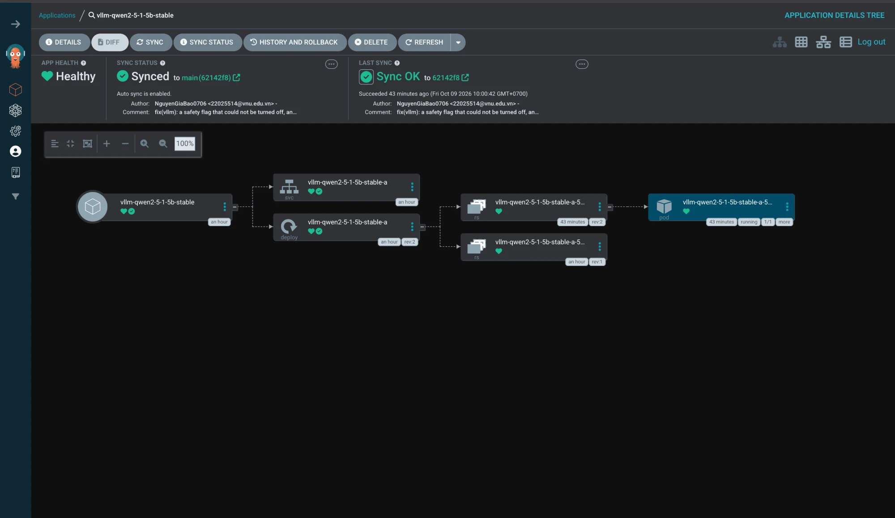
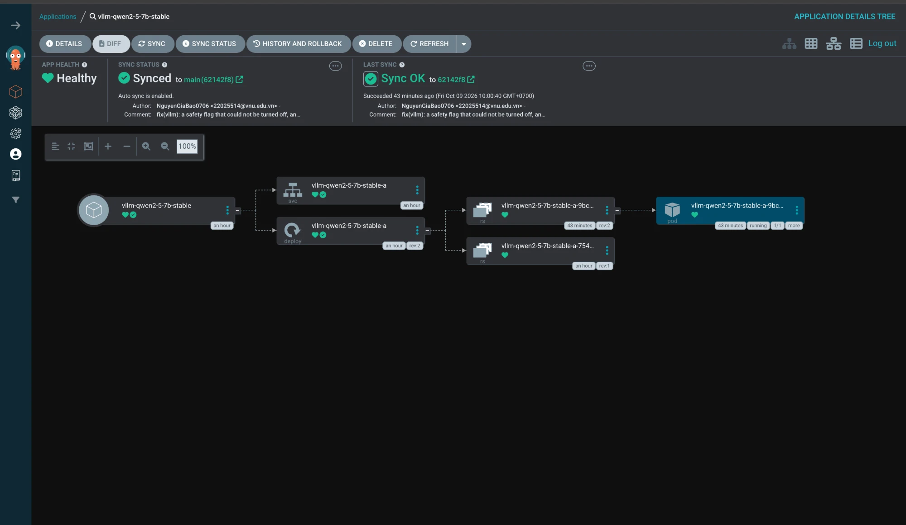
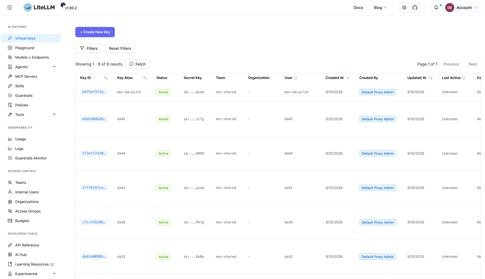
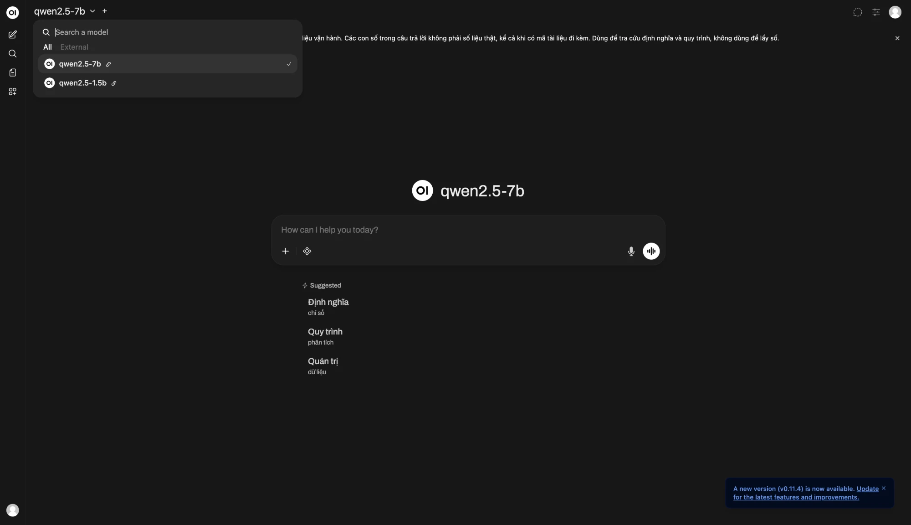
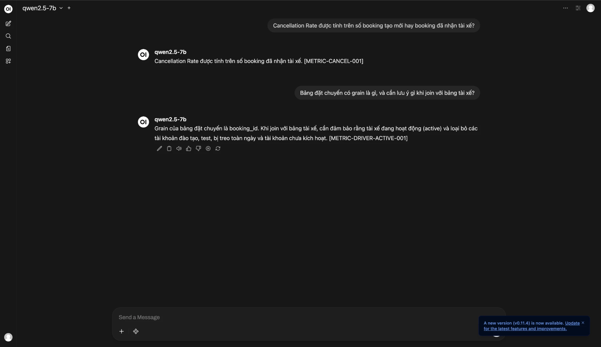
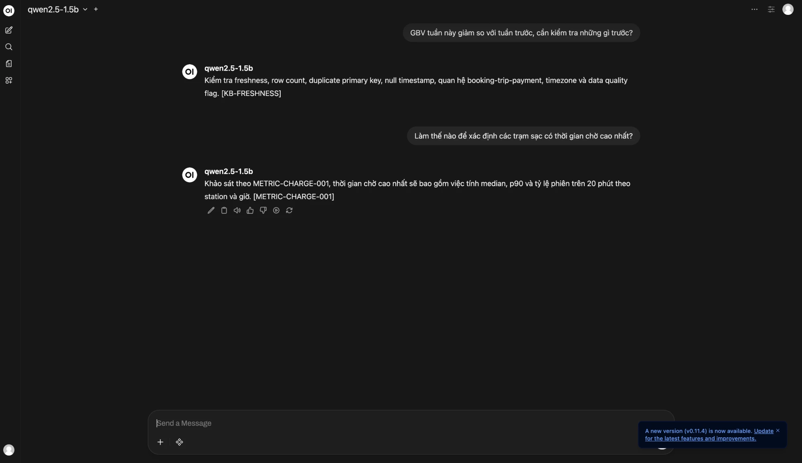

Cả 6 hạng mục nghiệm thu đạt. Hệ thống đạt trần tải 50 req/s toàn cụm, phục vụ 2 mô hình qua Argo CD và 8 Virtual Key cho 7 đề án cùng 1 tài khoản pilot.
| Tiêu chí | Yêu cầu | Trạng thái | Kết quả đo được |
|---|---|---|---|
| TC1a | p95 latency < 3.000 ms tại 50 req/s toàn cụm | ĐẠT | 1.590 ms, dư 47% ngân sách latency |
| TC1b | Availability toàn cụm ≥ 99,5% | ĐẠT | 99,7228% (cận dưới 95% CI, 34.354 probe), không có lỗi 5xx |
| TC2 | Tiết kiệm chi phí ≥ 30% so với Cloud API | ĐẠT | 2 báo cáo FinOps; chi phí AWS thực tế 01/09–06/10 là $86,79; tiết kiệm 49,4% – 54,3% tại 10 req/s |
| TC3 | Chặn tấn công ≥ 95%, chặn nhầm ≤ 2% | ĐẠT | Chặn 100%, chặn nhầm 0% trên 294 mẫu offline và 349 mẫu live cluster |
| TC4 | Phục vụ đồng thời ≥ 5 đề án | ĐẠT | 8 Virtual Key (7 đề án + 1 pilot) qua LiteLLM Gateway, RBAC, hạn mức $10,0/đề án |
| CD | CD tự động, phục vụ đa mô hình | ĐẠT | Argo CD App-of-Apps điều phối Qwen2.5-7B và Qwen2.5-1.5B trên cụm 4 node GPU |
Tệp deploy/state.yaml trong Git là nguồn sự thật duy nhất. Argo CD phát hiện thay đổi và đồng bộ trạng thái xuống cụm Kubernetes (auto sync bật).
stable nhận 100% traffic.idle.stable; Argo CD rolling update thay bản cũ.safetensors; từ chối Torch Pickle (.bin, .pt, .ckpt).manifest.json chứa SHA-256 từng tệp, ký bằng AWS KMS (ECC P-256).Ứng dụng root (path deploy/argocd/apps) quản lý 2 ứng dụng con trỏ vào charts/vllm, namespace inference: vllm-qwen2-5-7b-stable và vllm-qwen2-5-1-5b-stable. Cả 3 ứng dụng ở trạng thái Healthy và Synced to main (62142f8).

root, vllm-qwen2-5-1-5b-stable, vllm-qwen2-5-7b-stable đều Healthy / Synced / Sync OK, target revision main.
root (App-of-Apps): đồng bộ xuống 2 ứng dụng con của 2 mô hình. Last sync OK, auto sync enabled.
vllm-qwen2-5-1-5b-stable: Service, Deployment (rev:2), ReplicaSet và Pod 1/1 running, Healthy.
vllm-qwen2-5-7b-stable: cùng cấu trúc, Pod 1/1 running, Healthy, Sync OK tới 62142f8./ui, v1.90.2) liệt kê, tạo và thu hồi Virtual Key.da19, da20, da32, da39, da41, da44, da45 và moc-da-pilot; tất cả Active, thuộc Team moc-shared.qwen2.5-7b và qwen2.5-1.5b.sk-… bản rõ nằm trong Kubernetes Secret llm-serving/agent-keys phục vụ bàn giao.
moc-da-pilot, da45, da44, da41, da39, da32), trạng thái Active, Team moc-shared. Cột model và budget nằm ngoài khung chụp.moc-da-pilot.qwen2.5-7b (tác vụ phức tạp) và qwen2.5-1.5b (tác vụ đơn giản).lifecycle.postStart trong Helm chart tạo tài khoản admin@da51.lab từ Secret khi pod khởi động; đăng nhập trực tiếp, không qua màn hình setup.
qwen2.5-7b, qwen2.5-1.5b.
[METRIC-…].
[KB-FRESHNESS], [METRIC-CHARGE-001].Cấu hình đo: ramp 30 phút, 8 mức tải từ 1 đến 50 req/s, tổng 34.354 probe request; 4× NVIDIA A10G (EC2 g5.xlarge); Semantic Cache tắt để đo sức tải thật của engine và Guardrail.
| Tải (req/s) | Request | p50 (ms) | p95 (ms) | p99 (ms) | Availability | TC1a |
|---|---|---|---|---|---|---|
| 1 | 171 | 587 | 1.036 | 1.444 | 100,00% | Đạt |
| 10 | 1.700 | 563 | 1.082 | 2.007 | 99,94% | Đạt |
| 20 | 3.388 | 540 | 1.881 | 6.522 | 99,71% | Đạt |
| 30 | 5.086 | 556 | 1.180 | 1.827 | 99,71% | Đạt |
| 40 | 6.787 | 629 | 1.660 | 5.412 | 99,81% | Đạt |
| 45 | 7.631 | 641 | 1.466 | 2.450 | 99,74% | Đạt |
| 50 | 8.486 | 694 | 1.590 | 2.549 | 99,82% | ĐẠT |
Tổng chi phí 01/09 – 06/10/2026: $86,79 (usage thực tế trước credit, toàn tài khoản). Đơn giá đối soát từ hóa đơn: g5.xlarge (A10G) $1,006/giờ; g6.xlarge (L4) $0,8048/giờ; m7i.large $0,1008/giờ. Chi tiết: reports/aws-continuous-cost-2026-10-07.md.
Cấu hình tham chiếu P2 (Multi-AZ): 2 GPU L4, 4 CPU node, Aurora Multi-AZ, Redis HA; chi phí cố định $2.263,01/tháng. Chi tiết: reports/production-cost-estimation-tco-2026-10-05.md.
| Phương án | $/ngày | $/tháng (30 ngày) | Chênh lệch |
|---|---|---|---|
| Tự host Qwen 7B (P2) | 76,47 | 2.294,01 | Mốc so sánh |
| Qwen2.5-7B qua Cloud API (Phala) | 167,24 | 5.017,28 | Tự host rẻ hơn 54,3% |
| GPT-4o mini (OpenAI) | 233,49 | 7.004,67 | Tự host rẻ hơn 67,2% |
| Gemini 3.5 Flash-Lite (Google) | 480,08 | 14.402,46 | Tự host rẻ hơn 84,1% |
Điểm hòa vốn: 3,00 – 3,43 req/s (~259.000 request/ngày). Từ 10 req/s trở lên, tự host tiết kiệm 49,4% – 54,3%, so với yêu cầu 30% của TC2.
| Phụ trách | Hạng mục |
|---|---|
| Nguyễn Gia Bảo |
|
| Nguyễn Lê Minh |
|
Ngân sách: chi tiêu lũy kế $86,79 / $200,00 AWS được cấp. Duy trì bật/tắt cụm GPU theo lịch làm việc.